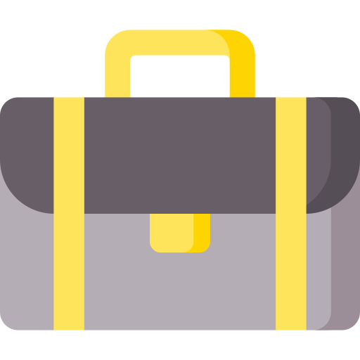

<ion-app>
  <ion-split-pane contentId="main-content" when="(min-width: 768px)">
    <!-- Sidebar Menu -->
    <ion-menu contentId="main-content" type="overlay">
      <ion-header>
        <ion-toolbar color="primary">
          <ion-title>
             
            <span style="margin-left: 10px;">Management</span>
          </ion-title>
        </ion-toolbar>
      </ion-header>

      <ion-content class="ion-padding">
        <ion-list lines="none">
          <ion-menu-toggle auto-hide="false">
            <ion-item routerLink="/faculty/dashboard" routerDirection="root" routerLinkActive="active-item">
              <ion-icon name="home-outline" slot="start"></ion-icon>
              <ion-label>Dashboard</ion-label>
            </ion-item>

            <ion-item routerLink="/faculty/classes" routerDirection="forward" routerLinkActive="active-item">
              <ion-icon name="school-outline" slot="start"></ion-icon>
              <ion-label>My Classes</ion-label>
            </ion-item>

            <ion-item routerLink="/faculty/analytics" routerDirection="forward" routerLinkActive="active-item">
              <ion-icon name="bar-chart-outline" slot="start"></ion-icon>
              <ion-label>Class Analytics</ion-label>
            </ion-item>

            <ion-item routerLink="/faculty/attendance" routerDirection="forward" routerLinkActive="active-item">
              <ion-icon name="checkmark-done-outline" slot="start"></ion-icon>
              <ion-label>Attendance</ion-label>
            </ion-item>

            <ion-item routerLink="/faculty/timetable" routerDirection="forward" routerLinkActive="active-item">
              <ion-icon name="calendar-outline" slot="start"></ion-icon>
              <ion-label>Timetable</ion-label>
            </ion-item>

            <ion-item routerLink="/faculty/progress" routerDirection="forward" routerLinkActive="active-item">
              <ion-icon name="pulse-outline" slot="start"></ion-icon>
              <ion-label>Class Progress</ion-label>
            </ion-item>

            <ion-item routerLink="/faculty/syllabus" routerDirection="forward" routerLinkActive="active-item">
              <ion-icon name="document-text-outline" slot="start"></ion-icon>
              <ion-label>Syllabus</ion-label>
            </ion-item>

            <ion-item >
              <ion-icon name="log-out-outline" slot="start"></ion-icon>
              <ion-label>Logout</ion-label>
            </ion-item>
          </ion-menu-toggle>
        </ion-list>
      </ion-content>
    </ion-menu>

    <!-- Main View -->
    <ion-router-outlet id="main-content"></ion-router-outlet>
  </ion-split-pane>
</ion-app>
